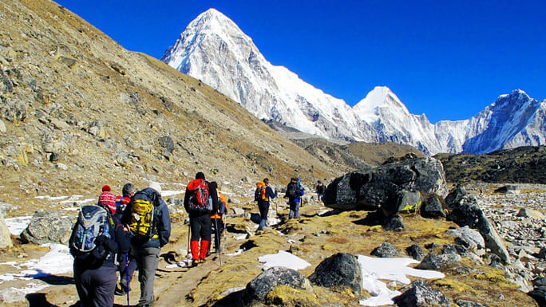

Two of the most popular trekking regions are the Everest and Annapurna where many different trails can be followed while the other popular treks are in the Langtang and Kanchenjunga regions. The most challenging is the Great Himalayan Trails, an extensive trail system that covers Nepal from Humla and Darchula in the west to Kanchenjunga in the east. The diversity of trekking trails in Nepal cannot be found in any other part of the world. In fact, the lowest point in Nepal is 59 m above sea-level in the Tarai region while the highest point is Everest, 8,848 m above sea-level, the two points being only 200 kilometres apart as the crow flies. A majority of visitors to Nepal come in via the Tribuvan International Airport in Kathmandu. It is in Kathmandu that trekkers need to acquire their permits and other documentation, either from a trekking agent or from the appropriate offices. These documents will be checked along the trekking route. For those with little time on their hands, there are half-day hikes from Kathmandu to witness breathtaking Himalayan views.
